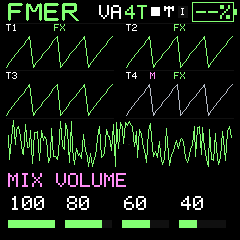
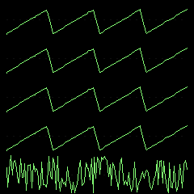

Patterns and performance
The performance mixer
Four fixed track columns keep live controls in consistent positions.
SEQ / PERFORM is a vertical mixer. K1–K4 always address tracks 1–4. ALGORITHM, SELECT or SEL selects the layer: Patch, Pattern, Run, Volume, Mute, Solo, FX. The screen shows the active layer and each track's state.
- Level: changes the local track level, not a transmitted MIDI CC7.
- Pattern: queues a change at that track's boundary.
- Sound: chooses a saved instrument slot; the project retains a reference to it.
- Mute: silences that track while its timeline continues.
- Solo: allows selected solo tracks through together; mute still wins for a muted track.
- FX: enables or bypasses the shared effect path for that track.
D/U identify Bank A/Bank B sound references; P identifies patterns. M, S and F mark mute, solo and FX state. Visit FX with its dedicated button and return to SEQ without stopping playback. Entering or leaving4T stops playback; switching between1V and6V or viewing pages does not.
All four local tracks are mono. A split MIDI output routes them onto consecutive channels for external recording, while merged output places generated notes together. Neither mode creates four independent USB audio streams.
Launch and stop at a bar
RUN follows Pattern and precedes Volume in the mixer layer order. Turn a track knob left to stop that cursor immediately, releasing its current note. Turn right to launch its queued pattern (or restart its current pattern) at the next global16-step downbeat. Hold SEL and tap PLAY to queue the last touched track; hold SEL and double-tap PLAY within300ms to queue all four. The master clock keeps its phase. Recording/count-in refuses launch changes. Ordinary pattern queues still wait for their own pattern boundary. A full Stop/Start starts all tracks again.
Mixer feel
LEVEL moves two percentage points per slow detent and accelerates to four or six during a continuous faster turn. Hold SEL for exactly one percentage point per detent. Changing direction, knob or fine mode resets acceleration. Other mixer layers keep their existing discrete behavior.
Meaningful lights
The selected page is bright. Enabled FX and LFO are dim when on another page. SAVE is dim for an edited working sound, blinks during a storage operation, briefly lights after verified completion and pulses more slowly on failure. The SAVE page itself stays bright as navigation feedback. REC pulses with the count-in clicks and stays bright during capture. ARP pulses with generated gates even on its own page; held chord keys remain dim while sounding generated pitches brighten. Short button taps receive a brief acknowledgement. Key lights still represent their actual octave and note ownership; no unrelated decorative animation is added.
Live keys while stopped
With the sequencer stopped and no recording armed, physical keys and arps audition the selected instrument through saved mute/solo settings. Track level, FX routing and Local Off still apply. Starting playback or recording restores mixer mute/solo control. Audition does not change or save your mix. Incoming external MIDI continues to follow mixer mutes.
Choose1V,6V or4T directly
SEQ / PLAY MODE K1 and GLO / VOICE/TEMPO K1 both offer1V,6V and4T. On PRESETS, SELECT chooses the same playing mode while PRESETS continues to browse sounds. Choose6V for four-note synth playing,1V for a mono instrument or4T for four independent mono tracks. Choosing1V enables Legato glide unless another glide mode is already selected;6V and4T turn glide off. The mode wheel stops at either end rather than wrapping around. Entering or leaving4T stops playback and releases notes while preserving patterns, assignments and mix. Switching between1V and6V keeps single-instrument sequencing running. Voices stays locked in4T. ALGORITHM still selects the track on PLAY MODE. PLAY MODE K2 selects glide Off/Legato/Always in single-instrument modes, K3 sets glide time and K4 its contour. Glide selects one voice; turning it off restores the previous single-instrument voice budget.
Playing-mode continuity
PRESETS changes your sound without changing SINGLE/4TRK or your single-instrument glide/polyphony setting. Loading a full project deliberately restores its playing mode. In either mode, press HOME again for fullscreen waveforms; four-track fullscreen shows four part traces above the master mix.
Finding controls in darkness
Action buttons and piano keys have a faint locating glow. Bright signals current navigation, a press, transport or an active note. Octave direction is shown by OCT−/OCT+: one octave is dim, two half brightness, three full brightness; a press briefly brightens the button. At zero both remain at locating brightness. The numeric octave value remains the exact reference.
In Companion, a two- or three-voice limit is shown as 2V or 3V Custom voice limit, rather than 6V. This can come from an imported sound or the advanced Voices slider. Choose 6V explicitly to restore the full four-voice budget.
Octave lights
OCT- and OCT+ show the direction of keyboard transpose. Zero uses the faint ready glow. One octave uses half brightness, two use three-quarter brightness, and three use full brightness. Pressing either button briefly lights it fully; the steady brightness after release shows the octave distance.



